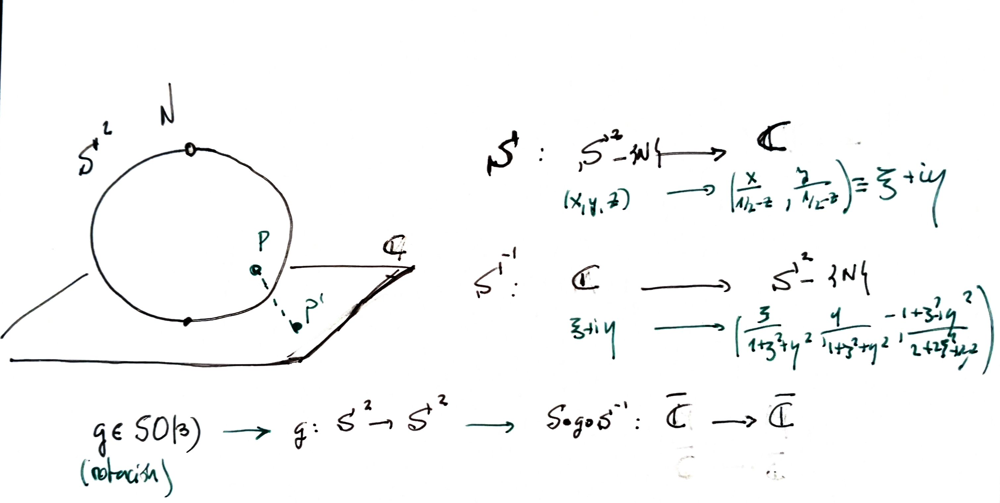

The group $SO(3)$ (special orthogonal group) consists of rotations of the 3D space. It can be defined in several ways, but ultimately we have a group representation
$$ SO(3) \longrightarrow GL(\mathbb{R}^3) $$This way, $SO(3)$ corresponds to orthogonal matrices with determinant equal to 1.The Lie algebra $so(3)$ corresponds, with this representation, to antisymmetryc matrices
$$ \left[\begin{array}{ccc} 0 & -c & b \\ c & 0 & -a \\ -b & a & 0 \end{array}\right] \leftrightarrow(a, b, c) \in \mathbb{R}^{3} $$that has a basis
$$ \hat{\mathbf{x}}=\left[\begin{array}{ccc} 0 & 0 & 0 \\ 0 & 0 & -1 \\ 0 & 1 & 0 \end{array}\right], \quad \hat{\mathbf{y}}=\left[\begin{array}{ccc} 0 & 0 & 1 \\ 0 & 0 & 0 \\ -1 & 0 & 0 \end{array}\right], \quad \hat{\mathbf{z}}=\left[\begin{array}{ccc} 0 & -1 & 0 \\ 1 & 0 & 0 \\ 0 & 0 & 0 \end{array}\right] $$On the other hand, we have the group $SU(2)$, of unitary 2x2 complex matrices with determinant equal to 1. This definition is, in fact, a complex linear representation $$ SU(2)\longrightarrow GL(\mathbb{C}^2) $$The Lie algebra $su(2)$ consists of anti-hermitiaan matrices with null trace, and has a basis
$$ e_1=\left[\begin{array}{cc} 0 & i \\ i & 0 \end{array}\right]; \,\,\, e_2=\left[\begin{array}{cc} 0 & -1 \\ 1 & 0 \end{array}\right];\,\,\, e_3=\left[\begin{array}{cc} i & 0 \\ 0 & -i \end{array}\right] $$The Lie algebras $so(3)$ and $su(2)$ not only have the same dimension, but they are isomorphic: we can map
$$ \begin{array}{c} \hat{x}\mapsto \frac{1}{2}e_1\\ \hat{y}\mapsto \frac{1}{2}e_2\\ \hat{z}\mapsto \frac{1}{2}e_3\\ \end{array} $$and conserve the commutation relations
Since $SO(3)$ and $SU(2)$ have the same Lie algebra, they have the same universal covering (in particular SU(2) is a double cover of $SO(3)$). And since $SU(2)$ is simply connected (because it is diffeomorphic to $S^3$, see section unitary matrix#What is SU 2 topologically), it is the universal covering group of $SO(3)$ (see section on covering groups).
But we can forget about these sophisticated tools, and try to see more directly the relationship between $SU(2)$ and $SO(3)$.The idea follows this way:

with $ad-bc\neq 0$ corresponds to
$$ \left[\left(\begin{array}{ll} a & b \\ c & d \end{array}\right)\right] \in GL(2,\mathbb{C})/\{\lambda I\} $$with nonzero determinant.
In other words, the complex vector space $\mathbb{C}^2$ gives rise to the complex projective line (aka the Riemann sphere). The linear transformations of $\mathbb{C}^2$ give rise to Moebius transformations.
But several linear transformations give rise to the same Moebius transformation, so we take equivalence classes. Even if we restrict to the singular matrices with unit determinant, we have a 2-1 relation. That is, we have a 2-1 surjection from $SL(2,\mathbb{C})$ to the group of Moebius, $\mathcal{M}$. That is,
$$ \mathcal{M}\equiv GL(2,\mathbb{C})/\{\lambda I\} \equiv SL(2,\mathbb{C})/\{\pm I\} $$so we can express the Moebius transformation (abusing of notation) by
$$ \pm \left(\begin{array}{ll} a & b \\ c & d \end{array}\right) $$with $ad-bc=1$.
and rotation along the $x$-axis and angle $\theta$,
$$ R_x^{\theta}\equiv \left\{ \begin{array}{l} x^{\prime}=x \\ y^{\prime}=y \cos \theta-z \sin \theta \\ z^{\prime}=y \sin \theta+z \cos \theta \end{array}\right. $$Pure algebraic manipulations lead us to the Moebius transformations:
$$ r_z^{\phi}=SR_z^{\phi}S^{-1}\equiv\zeta\mapsto \frac{e^{\frac{i \phi}{2}} \zeta+0}{0 \zeta+e^{-\frac{i \phi}{2}}} $$and
$$ r_x^{\theta}=SR_x^{\theta}S^{-1}\equiv\zeta\mapsto \frac{\cos \frac{\theta}{2} \zeta+i \sin \frac{\theta}{2}}{i \sin \frac{\theta}{2} \zeta+\cos \frac{\theta}{2}} $$so, in $SL(2,\mathbb{C})/ \{\pm I\}$
$$ r_z^{\phi}=\pm\left(\begin{array}{cc} e^{i \frac{\phi}{2}} & 0 \\ 0 & e^{-i \frac{\phi}{2}} \end{array}\right) $$ $$ r_x^{\theta}=\pm\left(\begin{array}{cc} \cos \frac{\theta}{2} & i \sin \frac{\theta}{2} \\ i \sin \frac{\theta}{2} & \cos \frac{\theta}{2} \end{array}\right) $$So if we start with the rotation of Euler angles $\phi, \theta, \psi$:
$$ R=R_{\phi, \theta, \psi}=\left(\begin{array}{ccc} \cos \phi & -\sin \phi & 0 \\ \sin \phi & \cos \phi & 0 \\ 0 & 0 & 1 \end{array}\right)\left(\begin{array}{ccc} 1 & 0 & 0 \\ 0 & \cos \theta & -\sin \theta \\ 0 & \sin \theta & \cos \theta \end{array}\right)\left(\begin{array}{ccc} \cos \psi & -\sin \psi & 0 \\ \sin \psi & \cos \psi & 0 \\ 0 & 0 & 1 \end{array}\right)= $$ $$ =\left(\begin{array}{ccc} \cos \phi \cos \psi-\cos \theta \sin \phi \sin \psi & -\cos \phi \sin \psi-\cos \theta \sin \phi \cos \psi & \sin \phi \sin \theta \\ \sin \phi \cos \psi+\cos \theta \cos \phi \sin \psi & -\sin \phi \sin \psi+\cos \theta \cos \phi \cos \psi & -\cos \phi \sin \theta \\ \sin \psi \sin \theta & \cos \psi \sin \theta & \cos \theta \end{array}\right) $$we get
$$ r_{\phi, \theta, \psi}=\pm\left(\begin{array}{cc} e^{i \frac{\phi}{2}} & 0 \\ 0 & e^{-i \frac{\phi}{2}} \end{array}\right)\left(\begin{array}{cc} \cos \frac{\theta}{2} & i \sin \frac{\theta}{2} \\ i \sin \frac{\theta}{2} & \cos \frac{\theta}{2} \end{array}\right)\left(\begin{array}{cc} e^{i \frac{\psi}{2}} & 0 \\ 0 & e^{-i \frac{\psi}{2}} \end{array}\right) $$ $$ =\pm\left(\begin{array}{cc} \cos \frac{\theta}{2} e^{i \frac{\phi+\psi}{2}} & i \sin \frac{\theta}{2} e^{i \frac{\phi-\psi}{2}} \\ i \sin \frac{\theta}{2} e^{-i \frac{\phi-\psi}{2}} & \cos \frac{\theta}{2} e^{-i \frac{\phi+\psi}{2}} \end{array}\right) $$where the determinant is obviously 1.
with $|\alpha|^2+|\beta|^2=1$, that is, it belong to $SU(2)/\{\pm I\}$. But the converse is also true. Every such pair of matrices in $SU(2)$ comes from a Moebius transformation corresponding to a rotation. To see that, we only have to solve
$$ \begin{aligned} \cos \frac{\theta}{2} &=|\alpha|, \quad \sin \frac{\theta}{2}=|\beta|, \quad(0 \leq \theta \leq \pi) \\ \frac{\phi+\psi}{2} &=\arg \alpha, \quad \frac{\psi-\phi}{2}=\arg \beta \end{aligned} $$to find the Euler angles.
We can even express the 3x3 rotation matrix in function of the given complexes numbers:
$$ \left(\begin{array}{ccc} \frac{1}{2}\left(\alpha^{2}-\beta^{2}+\overline{\alpha^{2}}-\overline{\beta^{2}}\right) & \frac{i}{2}\left(-\alpha^{2}-\beta^{2}+\overline{\alpha^{2}}+\overline{\beta^{2}}\right) & -\alpha \beta-\bar{\alpha} \bar{\beta} \\ \frac{i}{2}\left(\alpha^{2}-\beta^{2}-\overline{\alpha^{2}}+\overline{\beta^{2}}\right) & \frac{1}{2}\left(\alpha^{2}+\beta^{2}+\overline{\alpha^{2}}+\overline{\beta^{2}}\right) & -i(+\alpha \beta-\bar{\alpha} \bar{\beta}) \\ \alpha \bar{\beta}+\bar{\alpha} \beta & i(-\alpha \bar{\beta}+\bar{\alpha} \beta) & \alpha \bar{\alpha}-\beta \bar{\beta} \end{array}\right) $$with kernel $\{\pm I\}$. I.e., $SU(2)$ is a double cover of $SO(3)$.
#geometry
#liegroup
#physics
________________________________________
________________________________________
________________________________________
Author of the notes: Antonio J. Pan-Collantes
INDEX: